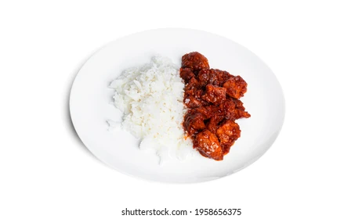
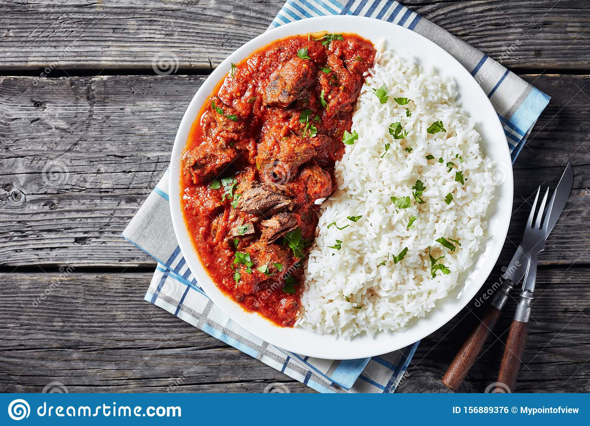
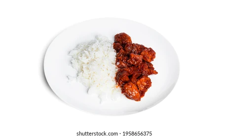
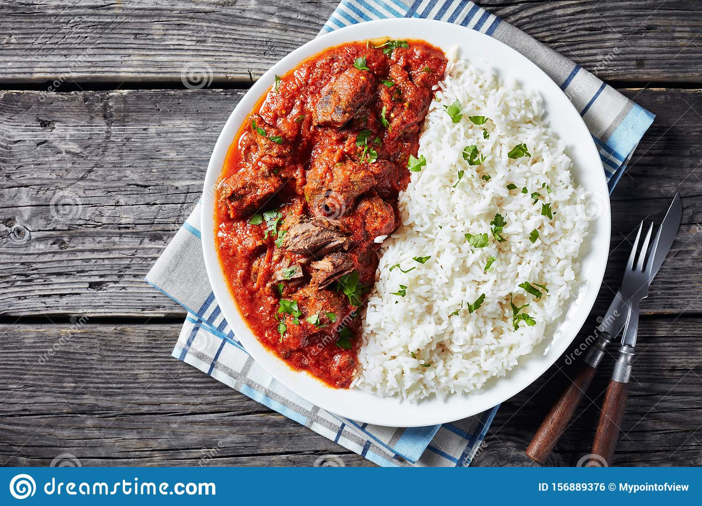

My Favourite Meal
Rice and Stew
ABOUT
Rice and Stew' is one of the most popular dishes in Nigeria.
It is as simple as rice and stew but garnishing makes this dish more
interesting
The Nigerian White Rice and Stew is a popular Nigerian rice recipe
because
it lets you eat rice with any stew or sauce of your
choice.
This rice recipe is usually eaten with Beef and/or Chicken Stew which we
almost always have
in the freezer so it is just a matter of
boiling white rice. So if you already
have Beef/Chicken Stew in
your freezer, the Boiled White Rice and Stew
will be one easy dinner recipe to make if you are tired after a long
busy day.
Cooking white rice is as easy as boiling eggs for
breakfast. It is usually
cooked plain with no added ingredients. Some people add salt but this is
optional.
This procedure applies to the long grain white rice.


- 4 cups rice
- 20 fresh tomatoes big
- 5 cups vegetable oil
- 10 fresh pepper big
- 2 big onion bulb
- 3 tablespoon curry
- 7 cube maggi to
- taste Salt
- 1 tablespoon thyme
- 3 pieces ginger medium
- 6 cloves garlic
- 300 g chicken meat
Ingredients
- Wash tomatoes,pepper,ginger,garlic and one onion blend.
- Wash and chop onion thinly.
- Get a clean pot,wash meat put in the pot spice with 4 cube maggi,some part of chop onion,thyme and little salt.
- Place on heat add little water boil for 15min
- Place pan on heat add vegetable oil allow to heat for 5min,add boiled chicken meat fry little by little until it finishes.
- Use the same oil for frying to make stew.Reduce 2 cup veg oil place on heat allow to heat for 4 min
- Add the remaining onions and the blended ingredient stir and allow to fry untill the water dries up oil will be seen at the surface.
- Add the meat stock,maggi,salt,curry and stir if stew is to thick add little water allow to boil for 10min.
- Stew is ready.
- Get a clean pot,place on heat add water and the rice allow to boil for 20min parboiling.
- Wash and drain rice put back on heat with little salt and water allow to boil untill the water is dried for 20 more min.
- Rice and stew is ready serve hot so so sumptious you can push it down with any soft drinks.
Cooking Instructions
 


